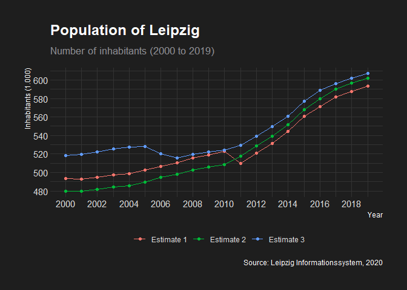
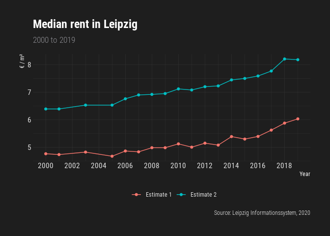
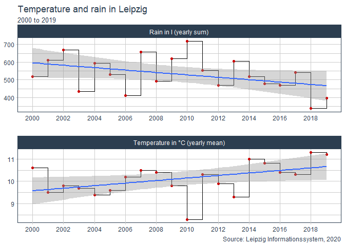
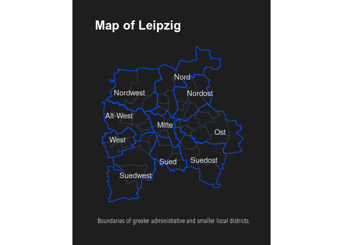

R interface to the Leipzig Informationssystem (LIS).
remotes::install_github("nrkoehler/lisr")
The package documentation can be found at Github Pages.
library(lisr) library(tidyverse) df.POP <- get_lis_pop(rubrik_nr = 1) # inhabitants df <- df.POP
glimpse(df) #> Rows: 27 #> Columns: 22 #> $ KENNZIFFER <chr> "Bevölkerung insgesamt", "Männer", "Frauen", "Deutsche", "… #> $ EINHEIT <lgl> NA, NA, NA, NA, NA, NA, NA, NA, NA, NA, NA, NA, NA, NA, NA… #> $ JAHR_2000 <int> 493208, 237986, 255222, 466069, 219912, 246157, 27139, 180… #> $ JAHR_2001 <int> 493052, 238175, 254877, 463959, 219207, 244752, 29093, 189… #> $ JAHR_2002 <int> 494795, 239154, 255641, 463717, 219377, 244340, 31078, 197… #> $ JAHR_2003 <int> 497531, 240878, 256653, 465230, 220637, 244593, 32301, 202… #> $ JAHR_2004 <int> 498491, 240818, 257673, 467644, 222198, 245446, 30847, 186… #> $ JAHR_2005 <int> 502651, 243125, 259526, 470903, 224174, 246729, 31748, 189… #> $ JAHR_2006 <int> 506578, 245017, 261561, 474597, 226368, 248229, 31981, 186… #> $ JAHR_2007 <int> 510512, 247282, 263230, 477724, 228329, 249395, 32788, 189… #> $ JAHR_2008 <int> 515469, 250018, 265451, 481941, 230729, 251212, 33528, 192… #> $ JAHR_2009 <int> 518862, 251748, 267114, 486564, 233397, 253167, 32298, 183… #> $ JAHR_2010 <int> 522883, 253533, 269350, 492686, 236809, 255877, 30197, 167… #> $ JAHR_2011 <int> 510043, 245137, 264906, 487244, 232954, 254290, 22799, 121… #> $ JAHR_2012 <int> 520838, 251491, 269347, 495062, 237401, 257661, 25776, 140… #> $ JAHR_2013 <int> 531562, 257445, 274117, 502719, 241647, 261072, 28843, 157… #> $ JAHR_2014 <int> 544479, 264914, 279565, 511069, 246416, 264653, 33410, 184… #> $ JAHR_2015 <int> 560472, 274414, 286058, 518473, 250522, 267951, 41999, 238… #> $ JAHR_2016 <int> 571088, 280292, 290796, 523565, 253236, 270329, 47523, 270… #> $ JAHR_2017 <int> 581980, 285777, 296203, 529804, 256245, 273559, 52176, 295… #> $ JAHR_2018 <int> 587857, 288553, 299304, 533218, 257964, 275254, 54639, 305… #> $ JAHR_2019 <int> 593145, 291450, 301695, 535813, 259368, 276445, 57332, 320… df$KENNZIFFER #> [1] "Bevölkerung insgesamt" "Männer" "Frauen" #> [4] "Deutsche" "Männer" "Frauen" #> [7] "Ausländer" "Männer" "Frauen" #> [10] "Bevölkerung insgesamt" "Männer" "Frauen" #> [13] "Deutsche" "Männer" "Frauen" #> [16] "Ausländer" "Männer" "Frauen" #> [19] "Bevölkerung insgesamt" "Männer (Melderegister)" "Frauen (Melderegister)" #> [22] "Deutsche" "Männer" "Frauen" #> [25] "Ausländer" "Männer" "Frauen"
df.POP_sub <- df %>% filter(KENNZIFFER == "Bevölkerung insgesamt") %>% select(-EINHEIT) %>% mutate(KENNZIFFER = c("Estimate 1", "Estimate 2", "Estimate 3")) df.sub <- df.POP_sub
df.sub <- df.sub %>% pivot_longer( cols = starts_with("JAHR"), names_to = "Year", values_to = "Inhabitants" ) %>% mutate(Year = as.numeric(str_remove(Year, "JAHR_")))
ggplot(df.sub, aes( x = Year, y = Inhabitants / 1000, colour = KENNZIFFER )) + geom_line() + geom_point() + scale_x_continuous(breaks = seq(2000, 2019, 2)) + scale_y_continuous(breaks = seq(480, 650, 20)) + hrbrthemes::theme_modern_rc() + theme(legend.position = "bottom") + labs( colour = NULL, y = "Inhabitants (1.000)", title = "Population of Leipzig", subtitle = "Number of inhabitants (2000 to 2019)", caption = "Source: Leipzig Informationssystem, 2020" )

df.HOUSING <- get_lis_housing(rubrik_nr = 3) # flat rents df <- df.HOUSING
glimpse(df) #> Rows: 10 #> Columns: 20 #> $ KENNZIFFER <chr> "Haushalte insgesamt", "1-Personen-Haushalte", "2-Personen… #> $ EINHEIT <chr> "Median in Euro pro m²", "Median in Euro pro m²", "Median … #> $ JAHR_2000 <dbl> 4.76, 4.72, 4.79, 4.88, 4.58, 6.39, 6.33, 6.44, 6.39, 6.29 #> $ JAHR_2001 <dbl> 4.73, 4.81, 4.66, 4.81, 4.30, 6.39, 6.39, 6.48, 6.57, 6.08 #> $ JAHR_2003 <dbl> 4.82, 4.83, 4.91, 4.72, 4.65, 6.53, 6.53, 6.58, 6.55, 6.28 #> $ JAHR_2005 <dbl> 4.67, 4.69, 4.81, 4.40, 4.51, 6.53, 6.51, 6.65, 6.43, 6.46 #> $ JAHR_2006 <dbl> 4.86, 4.87, 4.84, 4.98, 4.76, 6.76, 6.78, 6.78, 6.75, 6.50 #> $ JAHR_2007 <dbl> 4.83, 4.80, 5.00, 4.99, 4.67, 6.90, 6.91, 6.94, 6.93, 6.74 #> $ JAHR_2008 <dbl> 4.98, 5.00, 4.93, 4.98, 4.67, 6.92, 6.93, 6.89, 6.94, 6.67 #> $ JAHR_2009 <dbl> 4.98, 5.00, 4.86, 4.82, 5.00, 6.95, 6.92, 7.03, 6.77, 6.70 #> $ JAHR_2010 <dbl> 5.12, 5.19, 5.00, 4.79, 5.05, 7.12, 7.15, 7.13, 7.05, 6.95 #> $ JAHR_2011 <dbl> 5.00, 4.97, 5.00, 5.00, 4.87, 7.08, 7.10, 7.08, 7.03, 6.85 #> $ JAHR_2012 <dbl> 5.145161, 5.145161, 5.172414, 5.000000, 4.687500, 7.200000… #> $ JAHR_2013 <dbl> 5.075000, 5.034483, 5.147059, 5.072464, 5.150000, 7.228916… #> $ JAHR_2014 <dbl> 5.384615, 5.454241, 5.238831, 5.313516, 5.344841, 7.446808… #> $ JAHR_2015 <dbl> 5.294117, 5.244824, 5.333333, 5.488810, 5.326422, 7.500000… #> $ JAHR_2016 <dbl> 5.390000, 5.333333, 5.407605, 5.600999, 5.399330, 7.590000… #> $ JAHR_2017 <dbl> 5.620000, 5.563269, 5.622829, 5.631813, 5.891208, 7.770000… #> $ JAHR_2018 <dbl> 5.875000, 5.833333, 5.938923, 5.961625, 6.187846, 8.208551… #> $ JAHR_2019 <dbl> 6.029364, 6.000000, 6.034483, 6.641187, 6.260099, 8.181818… df$KENNZIFFER #> [1] "Haushalte insgesamt" "1-Personen-Haushalte" #> [3] "2-Personen-Haushalte" "3-Personen-Haushalte" #> [5] "4- und Mehr-Personen-Haushalte" "Haushalte insgesamt" #> [7] "1-Personen-Haushalte" "2-Personen-Haushalte" #> [9] "3-Personen-Haushalte" "4- und Mehr-Personen-Haushalte"
df.HOUSING_sub <- df %>% filter(KENNZIFFER == "Haushalte insgesamt") %>% mutate(KENNZIFFER = c("Estimate 1", "Estimate 2")) df.sub <- df.HOUSING_sub
df.sub <- df.sub %>% pivot_longer( cols = starts_with("JAHR"), names_to = "Year", values_to = "Rent" ) %>% mutate(Year = as.numeric(str_remove(Year, "JAHR_")))
ggplot(df.sub, aes( x = Year, y = Rent, colour = KENNZIFFER )) + geom_line() + geom_point() + scale_x_continuous(breaks = seq(2000, 2019, 2)) + scale_y_continuous(breaks = seq(4, 9, 1)) + hrbrthemes::theme_modern_rc() + theme(legend.position = "bottom") + labs( colour = NULL, y = "€ / m²", title = "Median rent in Leipzig", subtitle = "2000 to 2019", caption = "Source: Leipzig Informationssystem, 2020" )

df.WEATHER <- get_lis_geo(rubrik_nr = 3) # weather df <- df.WEATHER %>% select(-EINHEIT)
glimpse(df) #> Rows: 18 #> Columns: 21 #> $ KENNZIFFER <chr> "Lufttemperatur (Jahresmittel)", "Abweichung der Lufttempe… #> $ JAHR_2000 <dbl> 10.6, 1.8, 34.8, -12.5, 9.0, 36.0, 7.0, 46.0, 1771.0, 18.5… #> $ JAHR_2001 <dbl> 9.5, 0.7, 34.7, -11.5, 6.0, 35.0, 14.0, 84.0, 1576.0, 5.5,… #> $ JAHR_2002 <dbl> 9.8, 0.9, 34.0, -13.3, 8.0, 44.0, 17.0, 75.0, 1579.0, 5.7,… #> $ JAHR_2003 <dbl> 9.7, 0.8, 36.0, -20.5, 21.0, 65.0, 25.0, 107.0, 2086.0, 39… #> $ JAHR_2004 <dbl> 9.4, 0.6, 30.3, -15.9, 1.0, 30.0, 12.0, 93.0, 1676.0, 12.2… #> $ JAHR_2005 <dbl> 9.6, 0.8, 32.4, -11.7, 6.0, 45.0, 23.0, 89.0, 1823.0, 22.0… #> $ JAHR_2006 <dbl> 10.2, 1.4, 36.3, -15.3, 18.0, 60.0, 26.0, 83.0, 1899.0, 27… #> $ JAHR_2007 <dbl> 10.5, 1.7, 36.5, -9.1, 6.0, 44.0, 10.0, 52.0, 1827.0, 22.3… #> $ JAHR_2008 <dbl> 10.4, 1.6, 33.4, -8.9, 11.0, 41.0, 8.0, 63.0, 1691.0, 13.2… #> $ JAHR_2009 <dbl> 9.8, 1.0, 33.4, -21.8, 5.0, 45.0, 25.0, 78.0, 1735.0, 16.1… #> $ JAHR_2010 <dbl> 8.3, -0.5, 36.3, -16.4, 10.0, 39.0, 62.0, 106.0, 1686.0, 1… #> $ JAHR_2011 <dbl> 10.3, 1.5, 32.6, -13.4, 3.0, 44.0, 15.0, 73.0, 2043.0, 36.… #> $ JAHR_2012 <dbl> 9.9, 1.1, 37.2, -21.5, 10.0, 44.0, 25.0, 68.0, 1784.0, 19.… #> $ JAHR_2013 <dbl> 9.3, 0.5, 35.4, -15.3, 11.0, 41.0, 31.0, 95.0, 1573.0, 5.3… #> $ JAHR_2014 <dbl> 11.0, 2.2, 34.2, -12.2, 8.0, 37.0, 13.0, 48.0, 1780.0, 19.… #> $ JAHR_2015 <dbl> 10.8, 2.0, 37.0, -6.0, 21.0, 49.0, 4.0, 65.0, 1934.0, 29.5… #> $ JAHR_2016 <dbl> 10.4, 1.6, 35.4, -11.8, 15.0, 61.0, 9.0, 72.0, 1828.0, 22.… #> $ JAHR_2017 <dbl> 10.3, 1.5, 33.3, -10.8, 9.0, 47.0, 14.0, 117.0, 1722.0, 15… #> $ JAHR_2018 <dbl> 11.30000, 2.50000, 36.60000, -13.20000, 29.00000, 56.00000… #> $ JAHR_2019 <dbl> 11.2000, 2.5000, 38.3000, -9.9000, 25.0000, 42.0000, 6.000… df$KENNZIFFER #> [1] "Lufttemperatur (Jahresmittel)" #> [2] "Abweichung der Lufttemperatur vom Normalwert (8,8°C)" #> [3] "Jahreshöchsttemperatur" #> [4] "Jahrestiefsttemperatur" #> [5] "30°C und wärmer (heiße Tage)" #> [6] "25°C und wärmer (warme Tage)" #> [7] "unter 0°C (Eistage)" #> [8] "unter 0°C (Frosttage)" #> [9] "Sonnenscheindauer (Jahressumme)" #> [10] "Abweichung der Sonnenscheindauer vom Normalwert (1 494 h)" #> [11] "Tage mit mindestens einer Stunde Sonnenschein" #> [12] "Niederschlagshöhe (Jahressumme)" #> [13] "Abweichung der Niederschlagshöhe vom Normalwert (511 mm)" #> [14] "Maximale Tageshöhe der Niederschläge" #> [15] "Tage im Jahr mit Niederschlagshöhe von mindestens 0,1 mm" #> [16] "Tage im Jahr mit Niederschlagshöhe von mindestens 10 mm" #> [17] "Jahresmittel der relativen Luftfeuchte" #> [18] "Maximale Windspitze"
df.WEATHER_sub <- df %>% filter(KENNZIFFER == "Lufttemperatur (Jahresmittel)" | KENNZIFFER == "Niederschlagshöhe (Jahressumme)") %>% mutate(KENNZIFFER = case_when( KENNZIFFER == "Lufttemperatur (Jahresmittel)" ~ "Temperature in °C (yearly mean)", KENNZIFFER == "Niederschlagshöhe (Jahressumme)" ~ "Rain in l (yearly sum)", TRUE ~ as.character(NA) )) df.sub <- df.WEATHER_sub
df.sub <- df.sub %>% pivot_longer( cols = starts_with("JAHR"), names_to = "Year", values_to = "Value" ) %>% mutate(Year = as.numeric(str_remove(Year, "JAHR_")))
ggplot(df.sub, aes( x = Year, y = Value )) + geom_step() + geom_point(colour = "red3") + scale_x_continuous(breaks = seq(2000, 2019, 2)) + geom_smooth(method = "lm") + tidyquant::theme_tq() + theme(legend.position = "bottom") + facet_wrap(. ~ KENNZIFFER, nrow = 2, scales = "free") + labs( x = NULL, y = NULL, title = "Temperature and rain in Leipzig", subtitle = "2000 to 2019", caption = "Source: Leipzig Informationssystem, 2020" )

df.centres <- df.DISTRICTS_LARGE %>% group_by(group) %>% summarise(LON = mean(lon), LAT = mean(lat)) ggplot(aes(x = lon, y = lat, group = group), data = df.DISTRICTS_SMALL) + hrbrthemes::theme_modern_rc() + theme( panel.grid.major = element_blank(), panel.grid.minor = element_blank(), axis.text.x = element_blank(), axis.text.y = element_blank() ) + coord_map() + geom_polygon(fill = NA, size = 0.2, color = "#354C6A") + geom_polygon(color = "#004CFF", size = 0.5, fill = NA, data = df.DISTRICTS_LARGE) + labs( title = "Map of Leipzig", x = NULL, y = NULL, caption = "Boundaries of greater administrative and smaller local districts." ) + annotate('text', x = df.centres$LON, y = df.centres$LAT, label = df.centres$group, colour = '#E2E3E7')
